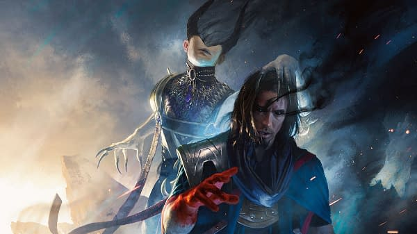

Você bem que tentou, foi um honrado soldado Boros até o final, mas lhe faltou força e foi sobrepujado pelo
Devorador de sonhos Ashiok, seu exército vai cair um a um na mão dos inimigos e seu corpo morto será esquecido
nos chãos de Ravnica, seu nome não será lembrado, e sua morte não será chorada. Infelizmente, você não passou de um detalhe
nesse jogo.

⠀⠀⠀⠀⠀"Cada pesadelo é um pássaro engaiolado que anseia pela liberdade."
⠀⠀⠀⠀⠀"Cada pesadelo é um pássaro engaiolado que anseia pela liberdade."